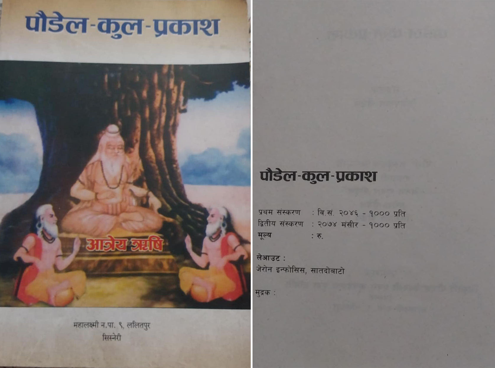
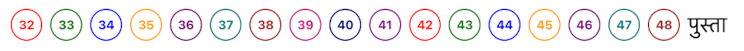

धेरै सोधिएका प्रश्नहरु
नेपालीक) स्रोत के हो?
यो sisneripoudel.com को मुख्य स्रोत तल देखाइएको "पौडेल-कुल-प्रकाश" (द्वितीय संस्करण २०७४) हो।

ख) चिन्हहरु के हुन्?
सबै चिन्ह क्लिक (👆) गरेर पूर्ण विवरण हेर्न मिल्छ।
* व्यक्ति टिप्पणी
+ वंशावलीपछि थपिएका प्रामाणिक व्यक्तिहरू
# वंशावलीको नाम त्रुटि सच्याइएको (प्रामाणिक)
ग) रंगहरु किन फरक फरक?
एउटै पुस्ता, एउटै रंग। फरक पुस्ता, फरक रंग। १० पुस्तापछि रंगहरु उही क्रममा दोहोरिन्छ।
घ) sisneripoudel.com मा नयाँ व्यक्ति/सन्तान थप्न के गर्नुपर्छ?
sisneripoudel.com को edit पेजमा गएर फारम भर्नुहोला। त्योबाहेक केहि सोध्न परेमा Contact पेजमा गएर WhatsApp Text वा email गर्नसक्नुहुन्छ। यसो गर्दा सम्पर्क गर्ने व्यक्तिले कृपया आफ्नो तीनपुस्ते परिचय खुलाइदिनु होला (नाम/बुवाको नाम/हजुरबुवाको नाम) र जसलाई जोड्न पर्ने हो त्यसको पनि पूर्ण विवरण दिनु होला।
ङ) छोरीको नाम थपिन्छ?
थपिन्छ। नयाँ छोरीको नाम थप्ने सन्दर्भमा निज वा निजको आमाबाबु वा निजको नजिकको सम्बन्धित व्यक्तिले अनुरोध गरेमा छोरीको नामपनि थपिन्छ। यहाँ छोरी भन्नाले 'जन्मेका पौडेल' भनेर बुझ्नुपर्छ।
च) किन कोही व्यक्तिको छोराहरू मात्र, कोहीको छोरीहरू मात्र, र केहीको छोराछोरी दुबै (मिश्रण) देखिन्छ?
यो सबै "पौडेल-कुल-प्रकाश (द्वितीय संस्करण २०७४)" पुस्तकको अनुसार हो। उदाहरणको लागि - “मिश्रण” त्यतिबेला देखिन सक्छ जब द्वितीय संस्करणमा छोरीहरू मात्र सूचीकृत थिए र पछि छोरासम्बन्धी प्रमाणित विवरण प्राप्त भएर थपियो। अथवा कतिपयले छोरीको नाम थप्न अनुरोध गर्नुभयो।
छ) पुस्ता नम्बर कसरी निर्धारण गरिएको हो?

पुस्तक अनुसार हरिद्वार निवासी श्री सोमनाथ आत्रेय (वि.सं ५२०)लाई पुस्ता १ मानिएको छ। सो अनुसार उपत्यका प्रवेश गरेका गोपाल ३२औं पुस्ता हुन आउछन् र हामी उहाँका सन्तति त्यही क्रमानुसार। सोमनाथ देखि गोपालसम्मको पुस्ता क्रमांक यो पेजमा हेर्न सकिन्छ।
ज) पुस्तकमा तेर्सो रेखामा सन्तानहरू छन् भने वेबसाइटमा ठाडो रेखामा। किन फरक?
किनभने वेभसाइटमा हरेक व्यक्तिको लिङ्कलाई जोड्न खोजिएको छ (जुन पुस्तकको पानामा सम्भव छैन)। अनि हाम्रो पुस्ता विस्तार यति धेरै छ कि कुनै पुस्तामा सयौंको सङ्ख्यामा व्यक्तिहरु छन्। पुस्तकको अनुसार गरेमा तेर्सो स्क्रोलिङ (Horizontal scrolling) जति गरेपनि सकिन्न (र विद्युतीय माध्यम तेर्सो भन्दा पनि ठाडो स्क्रोलको (Vertical scrolling) लागि बनाइएको हो)।
झ) व्यक्तिहरू कसरी प्रकृयाले थपिएका हुन्?
माथिको पुस्तकलाई आधार मानिन्छ र केही पनि हटाइएको छैन। नयाँ विवरणका लागि केवल प्रमाणित स्रोतहरू मात्र थपिन्छन्। कुनै नयाँ प्रमाणित व्यक्ति थपिँदा उनको नामको छेउमा (+) प्लस चिन्ह देखिन्छ। र, त्यसलाई क्लिक गरेपछि स्रोत देखिन्छ। पौडेल "छोरीहरुको सन्तान" थपिदैन।
ञ) के यो sisneripoudel.com "पौडेल-कुल-प्रकाश"को आउने तेस्रो संस्मरणसगै अद्यावधिक हुन्छ ?
अवश्य हुन्छ।
ट) sisneripoudel.com मा अरु के-के गर्न बाँकी छ?
१) "पौडेल-कुल-प्रकाश"मा कुनै हाँगाहरु मुलसँग जोडिएको छैन। जस्तै पृष्ठ ११६ मा मनोहर कसको सन्तान हुन् र कतिऔं पुस्ता भन्ने उल्लेख छैन। त्यसतो हाँगालाई छुट्टैरुपमा प्रस्तुत गर्ने सोच छ।
२) यो वंशावली प्रकाशन गर्ने समुहसँग सम्पर्क र समन्वय गर्ने (मिलेको खण्डमा उहाँहरुको contact पनि राख्ने)
Frequently Asked Questions
Englisha) What is the Source?
The primary source for this sisneripoudel.com is the published "Paudel-Kul-Prakash" book as shown below.
b) What are the signs?
You can see the full details with clicks (👆).
* Comment on a person
+ Authentic people added after 2074 genealogy
# Name error corrected (authentic) from 2074 genealogy
c) Why different Colors?
Same generation, same color. Different generation, different color. After 10 generations, colors repeat in order.
d) What should I do to ADD a new person/descendant to sisneripoudel.com?
You can go to the Edit page of sisneripoudel.com and fill up a small form. If you want to contact, please go to contact page and send a WhatsApp Text or email. In doing so, the person making the contact should identify themselves by three generations (name/father's name/grandfather's name) and provide full details of the person to be added as well.
e) Do you add 'Daughter' name?
YES. For adding a daughter's name, if the daughter or her parents or a close relative requests it, her name will be added. Here, the word "daughter" should be understood as "born Poudel".
f) How is the generation number determined?
According to the book, Shree Somnath Aatreya (463 AD) (a Haridwar resident) is Generation 1. Accordingly, Gopal, who entered the valley, comes to be Generation 32. We, his descendants, are in the successive order. The generation number from Somnath to Gopal can be seen on this page.
g) Book: Children side-by-side in horizontal line. Website: Children in vertical line. Why different structure?
They are different media. Using vertical structure, it keeps all generations linked together avoiding scrolling sideways forever.
h) How are persons added?
The above book is treated as the authoritative source. Nothing is removed from the book’s data. For new entries, only verified sources are added. Any newly verified person will display a (+) plus sign next to his/her name. Descendents of daughters will not be added.
i) Why do some people have sons, some only daughters, and some have a mix of sons/daughters?
This is all according to the book "Paudel-Kul-Prakash". A “mix” can appear when the book initially listed only daughters, and a verified son record was later obtained and added.
j) Will this sisneripoudel.com be updated with the upcoming third edition of "Poudel-Kul-Prakash"?
Of course.
k) What else is left to be done on sisneripoudel.com?
1) In "Paudel-Kul-Prakash", some of the branches are connected not connected to the root. For example, on page 116, Manohar's ancestor/generation is not known. The code needs to modify accordingly.
2) Contact/Be in touch with the group publishing this genealogy. Maybe give their details on the Contact page itself.